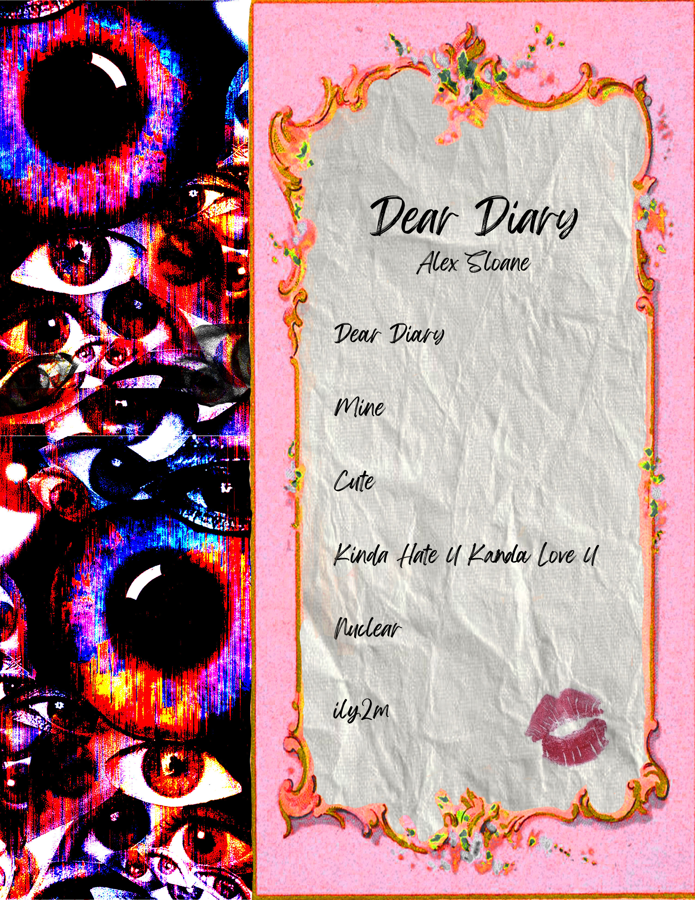

The purpose is to share the names of the songs in Alex Sloan's Dear Diary
album to her audience. I used Photoshop to put this together and took
inspiration from the album's concept, that being feminine with a dark
twist. I blended different assets together to get the final product I
wanted.